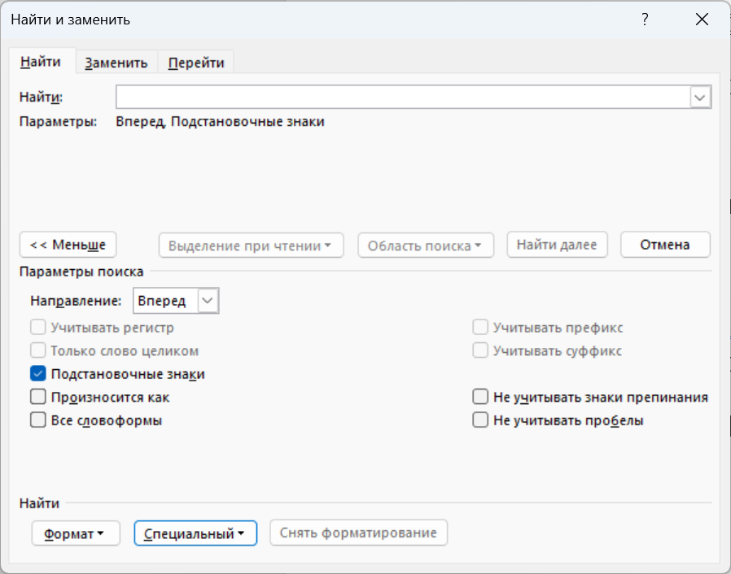

🎯Введение в поиск и замену
Microsoft Word предоставляет мощные инструменты для поиска и замены текста. Существует два основных режима работы:
🔧 Как открыть диалог "Найти и заменить":
- Нажмите Ctrl + H
- Вкладка "Главная" → "Заменить"
- Вкладка "Главная" → "Найти" → "Расширенный поиск"
💡 Совет: Всегда делайте резервную копию документа перед массовой заменой!
⚙️Режимы поиска в Word
📸 Интерфейс диалога "Найти и заменить"

⚠️ Важно: Обратите внимание на флажок "Подстановочные знаки" - он определяет режим работы поиска!
🔄 Два основных режима:
| Режим | Описание | Когда использовать |
|---|---|---|
| Обычный поиск | Флажок "Подстановочные знаки" НЕ установлен | Простой поиск текста и специальных символов |
| Подстановочные знаки | Флажок "Подстановочные знаки" установлен | Сложные шаблоны, регулярные выражения |
🔤Специальные символы (без подстановочных знаков)
⚠️ Важно: Эти символы работают только когда флажок "Подстановочные знаки" НЕ установлен!
| Символ | Описание | Пример использования |
|---|---|---|
| ^p | Знак абзаца (Enter) | Найти пустые абзацы: ^p^p |
| ^t | Знак табуляции (Tab) | Заменить табуляцию на пробелы |
| ^l | Разрыв строки (Shift+Enter) | Найти принудительные переносы |
| ^m | Разрыв страницы | Найти все разрывы страниц |
| ^s | Неразрывный пробел | Найти неразрывные пробелы |
| ^? | Любой символ | к^?т найдет: кот, кит, кут |
| ^# | Любая цифра | ^#^#.^#^#.^#^#^#^# найдет даты |
| ^$ | Любая буква | ^$^$^$ найдет трехбуквенные слова |
| ^& | Содержимое поля "Найти" | Дублировать найденный текст |
🧪 Практические примеры специальных символов:
1. Удаление лишних пустых строк:
Найти: ^p^p
Заменить: ^p
Результат: Двойные переносы строк заменятся на одинарные
Заменить: ^p
Результат: Двойные переносы строк заменятся на одинарные
2. Замена табуляции на пробелы:
Найти: ^t
Заменить: (4 пробела)
Результат: Все табуляции заменятся на 4 пробела
Заменить: (4 пробела)
Результат: Все табуляции заменятся на 4 пробела
3. Поиск телефонных номеров:
Найти: ^#+^#^#-^#^#-^#^#
Результат: Найдет номера вида: +123-45-67
Результат: Найдет номера вида: +123-45-67
🎭Подстановочные знаки (регулярные выражения)
⚡ Активация режима: Установите флажок "Подстановочные знаки" в диалоге "Найти и заменить".
| Символ | Описание | Пример | Найдет |
|---|---|---|---|
| . | Любой символ (кроме абзаца) | к.т | кот, кит, кут, к5т |
| * | Ноль или более предыдущих символов | ко*т | кт, кот, коот, кооот |
| ? | Ноль или один предыдущий символ | колоу?р | колор, колоур |
| @ | Один или более предыдущих символов | о@ | о, оо, ооо, оооо |
| ^ | Начало абзаца | ^Глава | "Глава" в начале абзаца |
| $ | Конец абзаца | точка.$ | строки, заканчивающиеся на "точка." |
| [] | Любой символ из скобок | [аеиоу] | любая гласная |
| [!] | Любой символ НЕ из скобок | [!аеиоу] | любая согласная |
| {} | Точное количество повторений | о{3} | ооо (ровно 3 буквы "о") |
| () | Группировка | (кот|пес) | кот или пес |
| [-] | Диапазон символов | [а-я] | любая строчная русская буква |
| {,} | Диапазон повторений | о{2,4} | оо, ооо, оооо |
| < | Начало слова | <авто | автомобиль, автобус |
| > | Конец слова | граф> | параграф, автограф |
| \ | Экранирование | \? | буквальный знак вопроса |
⚡ Продвинутые примеры подстановочных знаков:
1. Поиск email-адресов:
Найти: [A-Za-z0-9._-]@\.[A-Za-z0-9.-]@\.[A-Za-z]{2,4}
Найдет: user@example.com, test.email@domain.ru
Найдет: user@example.com, test.email@domain.ru
2. Поиск дат в формате ДД.ММ.ГГГГ:
Найти: [0-9]{1,2}\.[0-9]{1,2}\.[0-9]{4}
Найдет: 01.01.2024, 5.12.2023, 31.12.2024
Найдет: 01.01.2024, 5.12.2023, 31.12.2024
3. Поиск и замена кавычек:
Найти: "([!"]*)\"
Заменить: «\1»
Результат: "текст" → «текст»
Заменить: «\1»
Результат: "текст" → «текст»
💡Практические примеры
🧪 Интерактивный пример: Форматирование списка
Результат появится здесь...
🎯 Задача 1: Форматирование списка
Исходный текст:
1.Первый пункт
2.Второй пункт
3.Третий пункт
2.Второй пункт
3.Третий пункт
Цель: Добавить пробел после номера
Найти: ([0-9]@)\.([А-Я])
Заменить: \1. \2
Результат:
Заменить: \1. \2
Результат:
1. Первый пункт
2. Второй пункт
3. Третий пункт
2. Второй пункт
3. Третий пункт
🎯 Задача 2: Очистка лишних пробелов
Исходный текст: Текст с лишними пробелами
Обычный поиск:
Найти: (два пробела)
Заменить: (один пробел)
Повторить несколько раз
Подстановочные знаки:
Найти: [ ]{2,}
Заменить:
Найти: (два пробела)
Заменить: (один пробел)
Повторить несколько раз
Подстановочные знаки:
Найти: [ ]{2,}
Заменить:
🎯 Задача 3: Преобразование формата даты
Исходный текст: 01.01.2024
Цель: 01/01/2024
Найти: ([0-9]{1,2})\.([0-9]{1,2})\.([0-9]{4})
Заменить: \1/\2/\3
Заменить: \1/\2/\3
⚖️Сравнение режимов
| Задача | Обычный поиск | Подстановочные знаки |
|---|---|---|
| Найти любой символ | ^? | . |
| Найти любую цифру | ^# | [0-9] |
| Найти любую букву | ^$ | [А-Яа-яA-Za-z] |
| Найти начало абзаца | ^p в начале | ^ |
| Найти конец абзаца | ^p в конце | $ |
| Повторения | Не поддерживается | *, ?, @, {n,m} |
| Группировка | Не поддерживается | () |
✅ Когда использовать обычный поиск:
- Простая замена текста
- Работа со специальными символами форматирования
- Поиск конкретных слов или фраз
- Замена символов абзаца, табуляции и т.д.
⚡ Когда использовать подстановочные знаки:
- Поиск по шаблонам
- Сложные замены с группировкой
- Работа с регулярными выражениями
- Поиск email, телефонов, дат и т.д.
🎓Полезные советы и рекомендации
✅ Лучшие практики:
- Всегда делайте резервную копию документа перед массовой заменой
- Тестируйте на небольших фрагментах перед применением ко всему документу
- Используйте "Найти все" для предварительного просмотра результатов
- Изучайте постепенно — начинайте с простых выражений
- Сохраняйте полезные шаблоны для повторного использования
❌ Частые ошибки:
- Путаница режимов — проверяйте, включены ли подстановочные знаки
- Забывание экранирования — используйте \ для спецсимволов
- Неправильные квантификаторы — различайте * (0 или более) и @ (1 или более)
- Неучет регистра — помните о настройке "Учитывать регистр"
⌨️ Полезные комбинации клавиш:
| Комбинация | Действие |
|---|---|
| Ctrl + H | Открыть "Найти и заменить" |
| Ctrl + F | Открыть "Найти" |
| F3 | Найти далее |
| Shift + F3 | Найти назад |
| Ctrl + G | Перейти к странице/строке |